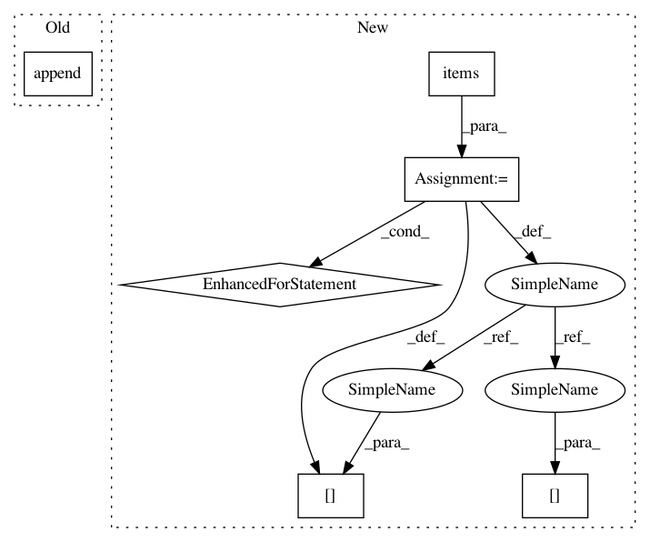

560cb94519ad5a5eed3adc323a9e1ad3cf0690e9,keras/callbacks.py,BaseLogger,on_batch_end,#BaseLogger#Any#Any#,120
Before Change
self.current += batch_size
loss = logs.get("loss")
self.log_values.append(("loss", loss))
self.tot_loss += loss * batch_size
if self.params["show_accuracy"]:
accuracy = logs.get("accuracy")
self.log_values.append(("acc.", accuracy))
After Change
batch_size = logs.get("size", 0)
self.seen += batch_size
for k, v in logs.items():
self.log_values.append((k, v))
if k in self.totals:
self.totals[k] += v * batch_size
else:
self.totals[k] = v * batch_size
// skip progbar update for the last batch; will be handled by on_epoch_end
if self.verbose and self.seen < self.params["nb_sample"]:
self.progbar.update(self.seen, self.log_values)
def on_epoch_end(self, epoch, logs={}):
In pattern: SUPERPATTERN
Frequency: 3
Non-data size: 6
Instances
Project Name: keras-team/keras
Commit Name: 560cb94519ad5a5eed3adc323a9e1ad3cf0690e9
Time: 2015-06-30
Author: francois.chollet@gmail.com
File Name: keras/callbacks.py
Class Name: BaseLogger
Method Name: on_batch_end
Project Name: uber/ludwig
Commit Name: 82ed4910d4687a2afd7b557df86b54382a983795
Time: 2020-03-25
Author: jimthompson5802@aol.com
File Name: ludwig/models/model.py
Class Name: Model
Method Name: batch_evaluation
Project Name: google/deepvariant
Commit Name: bde9abbb18dcdf19b4c4d2a02ccd323f90ebd5d4
Time: 2020-06-25
Author: sidharthgoel@google.com
File Name: deeptrio/make_examples.py
Class Name: RegionProcessor
Method Name: process
Project Name: keras-team/keras
Commit Name: 560cb94519ad5a5eed3adc323a9e1ad3cf0690e9
Time: 2015-06-30
Author: francois.chollet@gmail.com
File Name: keras/callbacks.py
Class Name: BaseLogger
Method Name: on_batch_end